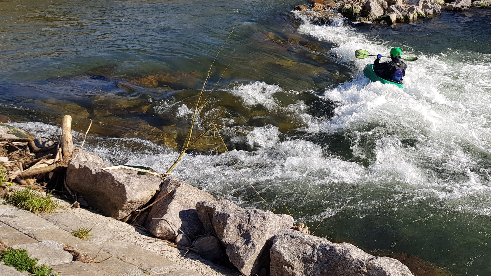

Gut vernetzt
Wir vertreten die Interessen der Kajaker*innen durch Vernetzung und Zusammenarbeit mit anderen Interessenvertretungen.

Eine Arbeitsgruppe der Basler Paddelsport IG
Wir setzen uns dafür ein, dass die Interessen der Kajaker*innen bei Wasserbauprojekten in der Region Basel berücksichtigt werden. Dafür sind wir kompetente Ansprechpartner für Behörden und Planer und erarbeiten gemeinsam tragfähige Lösungen.
Worum es geht
Werden an einem Flussabschnitt Bauarbeiten ausgeführt, müssen Behörden verschiedene Interessen berücksichtigen. Dazu gehören der Naturschutz – zum Beispiel die Förderung und der Erhalt der Artenvielfalt durch attraktive Lebensräume – und der Hochwasserschutz ebenso wie die Fischerei und andere Sport- und Freizeitbedürfnisse. Gerade in der dicht besiedelten Region Basel sind die Gewässer und ihre Uferbereiche wichtige Natur- und Naherholungsräume.
Unser Ziel ist es, für Kajaker*innen und Zuschauer*innen attraktive und sichere Flussabschnitte zu erhalten und zu gestalten. Wir sind überzeugt, dass sich die verschiedenen Interessen ergänzen und Verbesserungen für den Kajaksport ohne Nachteile für andere Anspruchsgruppen umsetzbar sind.
Wir vertreten die Interessen der Kajaker*innen durch Vernetzung und Zusammenarbeit mit anderen Interessenvertretungen.
Wir unterstützen Behörden und Planer mit technischer Erfahrung aus dem Paddelsport.
Wir freuen uns, bei Planungen und Bau mitzuwirken – als Teil einer gemeinschaftlichen Nutzung unserer Gewässer.
Kontakt